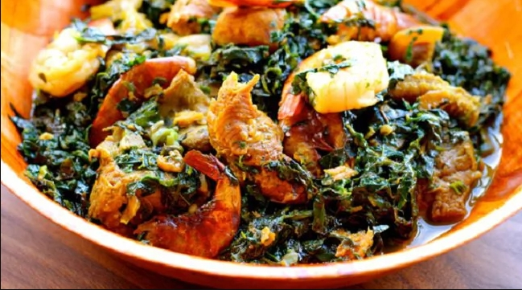

Vegetable Soup

DESCRIPTION:
Vegetable soup (Edikang Ikong style) is packed with leafy greens, making it highly nutritious and delicious.
INGREDIENTS:
- 2 cups pumpkin leaves (ugu)
- 1 cup waterleaf
- 1/2 cup palm oil
- Assorted meat and fish
- 2 tbsp crayfish
- 2 seasoning cubes
- 1 onion
- Salt to taste
STEPS:
- Cook meat with seasoning until tender.
- Add palm oil and crayfish.
- Add waterleaf and cook briefly.
- Add pumpkin leaves.
- Stir and cook for 5 minutes.
- Adjust seasoning and salt.
- Do not overcook vegetables.
- Serve hot with swallow.